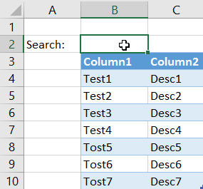

Excel: How to filter tables based on cell content (Searchbox)
TweetWith this VB script you can create a simple searchbox:

Private Sub Worksheet_Change(ByVal Target As Range) 'Variable to clear filters on table Dim tableNum As Integer 'Variable containing searchbox position Dim searchBoxPos As String searchBoxPos = "B2" 'Var containing the first element of the column affected by the search Dim colToSearch As String colToSearch = "B4"'Check if searchbox cell is edited If Not Application.Intersect(Target, Range(searchBoxPos)) Is Nothing Then Range(Range(colToSearch), Range(colToSearch).End(xlDown)).AutoFilter Field:=1, Criteria1:="" & Range(searchBoxPos).Value & "", Operator:=xlAnd 'If searchbox is empty remove all filters If Range(searchBoxPos).Value = "" Then tableNum = 1 For Each element In ActiveSheet.ListObjects ActiveSheet.ListObjects(tableNum).Range.AutoFilter tableNum = tableNum + 1 Next element End If End If End Sub
Comments
Comments powered by Disqus